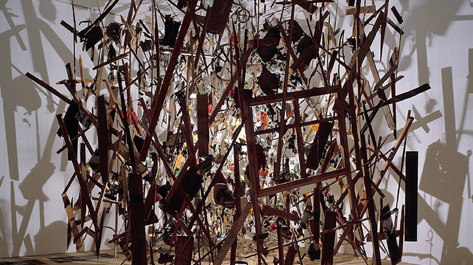

idea

Cornelia Parker
https://chloe328.wordpress.com/tag/cornelia-parker/-どんな人
ロンドンを拠点として活躍したインスタレーションアーティストです。木材の破片や石といった自然のものを糸でつるして、一つの塊が空中で分離しているように見せたインスタレーション作品を多く作っています。
-解説
木材の破片や、ブーツ、雑貨などを一つ一つ吊るしてつくられています。それぞれのパーツは隙間を開けながらも一つの塊として見えるように配置されており、塊が爆発して分離していく瞬間を切り取ったような視覚効果があらわれています。中央に置かれた高原は、爆発の光を表現しつつ、周りの空間に印象的な影を作っています。
-好きなところ
いまにも飛び散りそうな一瞬を見事に表現していて好きです。長い木材の破片の角度を変えながら配置しているので止まっても動きを感じるように見えます。